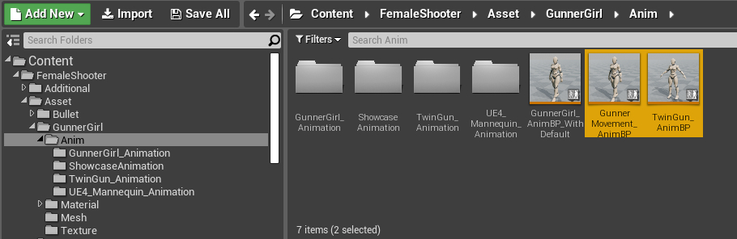
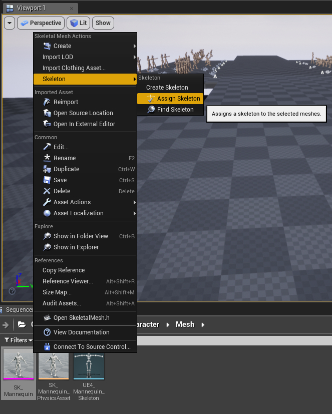
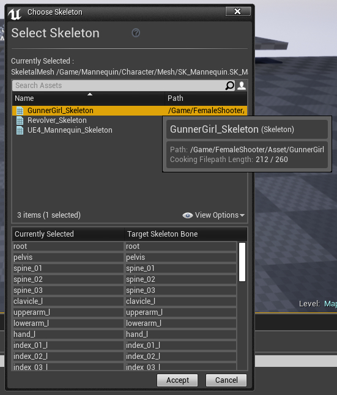
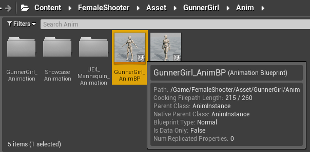
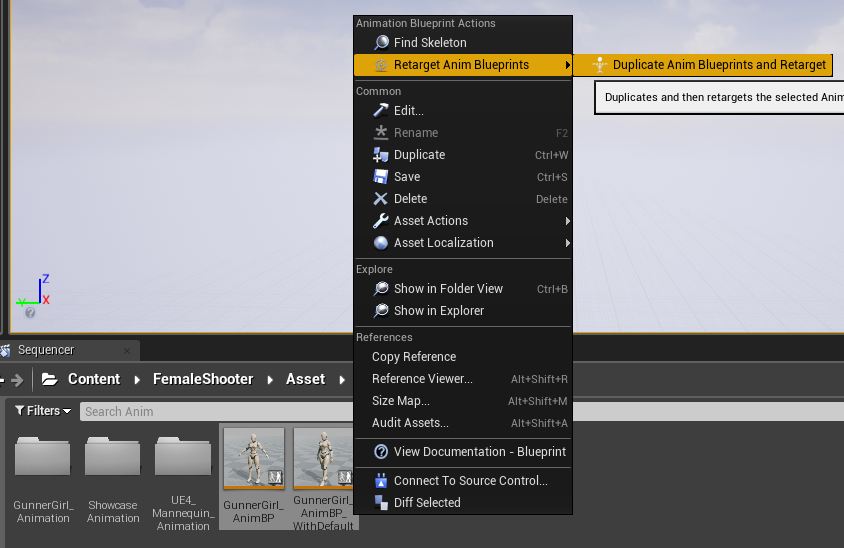
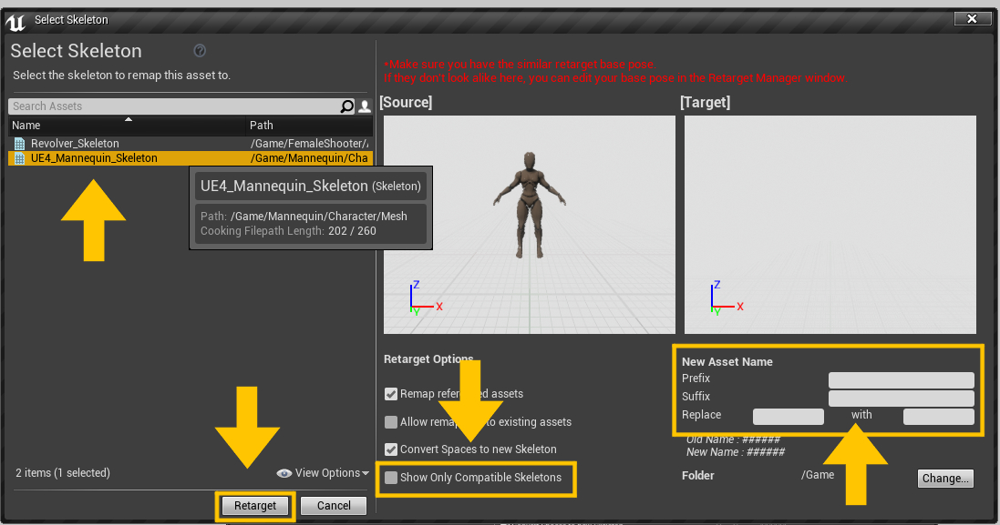
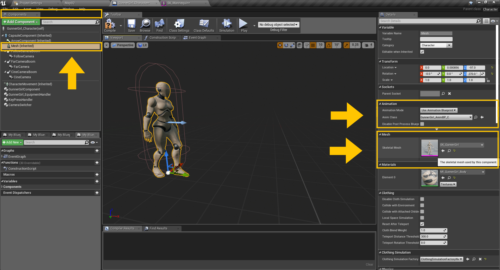

Female Shooter - User Guide
Setting up the Animation Blueprints
As of 1.3.0, the animation system are now implemented using sub-graphs to make it more modular and easier to apply to existing projects.
There are 2 animation blueprints that can to be used for this approach, both can be used independently from each other,
- GunnerMovement_AnimBP, contains the animation control for the GunnerGirl locomotion
- TwinGun_AnimBP, contains the animation control for the arms and hands during gun pose

Examples are also provided on how to use the new animation blueprints as modular parts of a larger animation blueprint.
They can be found here,
-
Content/FemaleShooter/Asset/GunnerGirl/Anim/UE4_Mannequin_Animation/ThirdPersonMod_AnimBP
Example on how to blend the TwinGun_AnimBP with the existing ThirdPerson_AnimBP -
Content/FemaleShooter/Asset/GunnerGirl/Anim/GunnerGirl_AnimBP
Example on how to use both GunnerMovement_AnimBP and TwinGun_AnimBP together.
This is the default animation blueprint used for the GunnerGirl_Character
Explanations for both examples can be seen in this article.
Using the example animation blueprints on an existing character
Assuming you haven't made any existing animation blueprints of your own, or you just want to use the provided example animations blueprints on your character.
There are 2 ways to do this,
- You can reassign the skeleton for your skeletal mesh,
(might not work on every mesh) - Or you can retarget the Animation Blueprint to your skeletal mesh
(recommended)
Details can be found below.
Reassigning the Skeleton
Reassigning skeleton is the faster way of the two, but it will not work on every skeletal mesh.
The GunnerGirl_Skeleton is based on the rescaled version of UE4 Mannequin skeleton, so any skeletal mesh whose skeleton is based on the UE4 mannequin will most likely work with minimal issue when using this method.
However, it's not really recommended to use this approach since it might not work with skeletal mesh whose joint orientation is set differently from the UE4 Mannequin.
With that said, the steps are as follows,
- Right click on the skeletal mesh you wish to use for your character,
- Choose Skeleton, then choose Assign Skeleton

- A dialog window will appear, telling you to choose a skeleton.
- Choose the GunnerGirl_Skeleton, then press Accept.

This will disassociate your mesh from its original skeleton, and set the GunnerGirl_Skeleton as your new skeleton.
If reassignment is the method you choose, the animation blueprint that you'll be using for the next step is located at Content/FemaleShooter/Asset/GunnerGirl/Anim/GunnerGirl_AnimBP.

Once you're ready, you can continue with the process and see the next steps here.
Retarget the Animation Blueprint
Retargeting the animation blueprint to your existing skeleton might take a little bit more time to perform.
However, this approach can be done on most skeletal mesh, even if the skeleton skeleton structure is not based on the UE4 Mannequin.
Instructions on how to retarget the Female Shooter animation blueprint to your character are as written below,
-
First, you will need prepare your skeleton for the retargeting process.
Detailed instruction on how to do this can be found in the retargeting preparation guide. -
Next, navigate to Content/FemaleShooter/Asset/GunnerGirl/Anim/GunnerGirl_AnimBP
-
Right click on the file,
choose Retarget Anim Blueprints,
then choose Duplicate Anim Blueprints and Retarget
-
A dialog window will appear.

You will need to choose the skeleton asset of your chosen skeletal mesh here.
Try unchecking the Show Only Compatible Skeletons option if your skeleton asset is not listed on the option. -
[Optional] Add a prefix and assign the folder for the New Asset NameThis step is optional, but recommended.
It might be helpful when you need to locate the newly generated asset using its name. -
Press the Retarget button
Once the retargeting is done, several new files will be generated into your project.
If retargeting is the approach you choose, the animation blueprint that you'll be using for the next step will be the one that the system generated for you based on the GunnerGirl_AnimBP animation blueprint.
Once you're done with the retargeting process, you can proceed to the next steps by going here.
Connecting the Animation Blueprint to your Character
Once the Animation Blueprint is ready, we can now connect it to the character.
Instructions as follows,
- Open your character's blueprint
- Go to Components tab, select the Mesh component
- Go to Details tab, find the Mesh tab,
-
Click on the Skeletal Mesh, make sure the value is set to your chosen skeletal mesh

-
Next, still in the Details tab, find the Animation tab
- Set the value of Animation Mode to Use Animation Blueprint.
- Set the value of Anim Class into the Animation Blueprint that you've prepared previously.
This should complete the basic setup for applying the Female Shooter character template to your character.
If you're planning to use your own animations for your character, make sure to take a look at the custom animations guide.